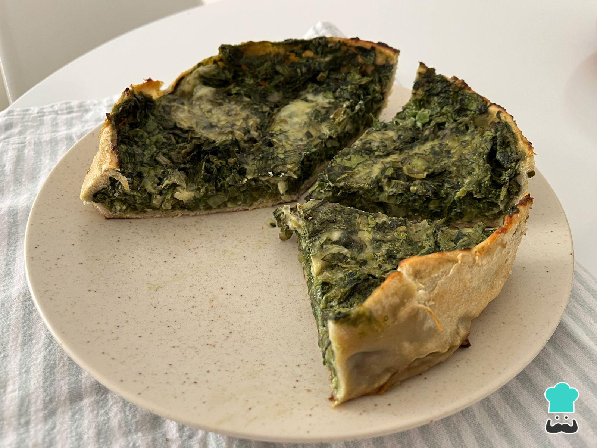

Tarta de Verdurita

Descripción
La tarta de verdurita es un plato muy sabroso y saludable. Es una excelente opción para una cena ligera o para llevar a un picnic.
Es muy fácil de preparar y puedes usar las verduras que más te gusten.
¡Espero que disfrutes de esta deliciosa receta!
Ingredientes:
- 1 masa de hojaldre
- 1 calabacín
- 1 zanahoria
- 1 pimiento rojo
- 1 pimiento verde
- 1 cebolla
- 100 gramos de queso rallado
- 3 huevos
- 200 ml de nata para cocinar
- Sal y pimienta al gusto
Pasos:
- Extiende la masa de hojaldre en un molde para tarta y pincha la base con un tenedor
- Corta todas las verduras en rodajas finas y colócalas sobre la masa de hojaldre
- Bate los huevos en un bol y añade la nata, el queso rallado, la sal y la pimienta. Mezcla bien
- Vierte la mezcla de huevo y nata sobre las verduras en el molde
- Hornea la tarta a 180°C durante 30-40 minutos o hasta que esté dorada y cuajada
- Sirve la tarta caliente o fría, ¡y disfruta!
Home